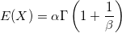
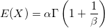

/math-528254e4a948602b02ee9f265f38740f.png "0 < \sigma") . Mit und .
. Mit und .Inhalt
|
Verwenden Sie die Verteilungsanpassung, um eine Verteilung an eine Variable anzupassen.
Es gibt sieben Verteilungen, die verwendet werden können, um eine gegebene Variable anzupassen. Die Maximum-Likelihood-Schätzung (MLE) wird als Parameterschätzer berechnet. Für einige stetige Verteilungen wird nicht nur die Konfidenzgrenze angegeben, sondern auch der Test der Anpassungsgüte angeboten.
wobei und . Mit und .
Das Konfidenzintervall für /math-c9faf6ead2cd2c2187bd943488de1d0a.png "\mu") und
und /math-a2ab7d71a0f07f388ff823293c147d21.png "\sigma") ist:
ist:
![\left[ \hat{\mu} - z \hat{\mu}_{se}, \hat{\mu} + z\hat{\mu}_{se} \right]](../images/Algorithm(Distribution_Fit)/math-ce2e8d2b0c42adb8837e69b4adc2606e.png "\left[ \hat{\mu} - z \hat{\mu}_{se}, \hat{\mu} + z\hat{\mu}_{se} \right]")
wobei /math-fbade9e36a3f36d3d676c1b808451dd7.png "z") der kritische Wert für die Standard-Normalverteilung darstellt, für die das Konfidenzniveau bei liegt. ist der Standardfehler für und
der kritische Wert für die Standard-Normalverteilung darstellt, für die das Konfidenzniveau bei liegt. ist der Standardfehler für und /math-237d6e4519dd1de11a647716b37457f7.png "\hat{\sigma}_{se}") für .
für .
wobei und . Mit und /math-43de677b47e0ac3bb214060a9e5b3d94.png "Var(X)=exp(2(\mu + \sigma^2)) -exp(2\mu + \sigma^2 )") .
.
Das Konfidenzintervall für und ist:
wobei den kritischen Wert für die Standard-Normalverteilung darstellt, für die das Konfidenzniveau bei liegt. ist der Standardfehler für und für .
wobei /math-89d8caf054af6cb4d5b227ed3c6f371c.png "\alpha , \beta > 0") . Mit  und .
. Mit  und .
Origin ruft eine NAG-Funktion nag_estim_weibull (g07bec) für die MLE der Statistikwerte der Weibull-Verteilung auf. Bitte lesen Sie weitere Einzelheiten zu dem Algorithmus im entsprechenden NAG-Dokument nach.
wobei und . Mit und .
Das Konfidenzintervall für ist:
wobei den kritischen Wert für die Standard-Normalverteilung darstellt, für die das Konfidenzniveau bei liegt. ist der Standardfehler für .
wobei . Mit und .
Es ist nicht einfach, die MLE von /math-7b7f9dbfea05c83784f8b85149852f08.png "\alpha") und manuell zu berechnen. Mit der Newton-Raphson-Methode jedoch können Sie leicht Ihr Ziel erreichen. Um eine gute Wurzel der Likelihood-Schätzung zu erhalten, muss ein geeigneter Anfangsschätzer zur Verfügung stehen, der gegeben werden kann durch:
und manuell zu berechnen. Mit der Newton-Raphson-Methode jedoch können Sie leicht Ihr Ziel erreichen. Um eine gute Wurzel der Likelihood-Schätzung zu erhalten, muss ein geeigneter Anfangsschätzer zur Verfügung stehen, der gegeben werden kann durch:
Das Konfidenzintervall für und /math-2554a2bb846cffd697389e5dc8912759.png "\theta") ist:
ist:
wobei den kritischen Wert für die Standard-Normalverteilung darstellt, für die das Konfidenzniveau bei liegt. ist der Standardfehler für und für .
wobei /math-8f4ea9a0cdd8693a22df6edd418d412b.png "0 \leq p \leq 1") und . Mit und . Gegeben sind eine Anzahl von Erfolgen
und . Mit und . Gegeben sind eine Anzahl von Erfolgen /math-9dd4e461268c8034f5c8564e155c67a6.png "x") und der Stichprobenumfang.
und der Stichprobenumfang. /math-7b8b965ad4bca0e41ab51de7b31363a1.png "n")
wobei den kritischen Wert für die Standard-Normalverteilung darstellt, für die das Konfidenzniveau bei liegt.
wobei . Mit .
.
Das Konfidenzintervall für /math-c6a6eb61fd9c6c913da73b3642ca147d.png "\lambda") ist:
ist:
wobei den kritischen Wert für die Standard-Normalverteilung darstellt, für die das Konfidenzniveau bei liegt.
Origin ruft eine NAG-Funktion nag_1_sample_ks_test (g08cbc) auf, um die Statistik zu berechnen. Bitte lesen Sie weitere Einzelheiten zu dem Algorithmus im entsprechenden NAG-Dokument nach.
Die modifizierte Kolmogorov-Smirnov-Statistik ist eine Modifikation der Kolmogorov-Smirnov-Statistik basierend auf verschiedenen Verteilungen.
Der p-Wert für die Kolmogorov-Smirnov-Statistik wird auf Grundlage der Tabelle mit den kritischen Werten unten berechnet, die von D’Agostino und Stephens (1986) bereit gestellt wurde. Wenn der Wert von D zwischen den Wahrscheinlichkeitsstufen liegt, wird die lineare Interpolation verwendet, um den p-Wert zu schätzen.
Hier ist die Kolmogorov-Smirnov-Statistik.
| D | <0,775 | 0,775 | 0,819 | 0,895 | 0,995 | 1,035 | >1,035 |
|---|---|---|---|---|---|---|---|
| p-Wert | >=0,15 | 0,15 | 0,10 | 0,05 | 0,025 | 0,01 | <=0,01 |
| D | <1,372 | 1,372 | 1,477 | 1,577 | 1,671 | >1,671 |
|---|---|---|---|---|---|---|
| p-Wert | >=0,1 | 0,1 | 0,05 | 0,025 | 0,01 | <=0,01 |
| D | <0,926 | 0,926 | 0,995 | 1,094 | 1,184 | 1,298 | >1,298 |
|---|---|---|---|---|---|---|---|
| p-Wert | >=0,15 | 0,15 | 0,10 | 0,05 | 0,025 | 0,01 | <=0,01 |
| D | <0,74 | 0,74 | 0,780 | 0,800 | 0,858 | 0,928 | 0,990 | 1,069 | 1,13 | >1,13 |
|---|---|---|---|---|---|---|---|---|---|---|
| p-Wert | >=0,25 | 0,25 | 0,20 | 0,15 | 0,10 | 0,05 | 0,025 | 0,01 | 0,005 | <=0,005 |
/math-800618943025315f869e4e1f09471012.png "F") die kumulative Verteilungsfunktion der festgelegten Verteilung ist.
die kumulative Verteilungsfunktion der festgelegten Verteilung ist./math-762c0f38c71ffa6e93f0a1daab55ab04.png "Y_i") die geordneten Datenpunkte sind:
die geordneten Datenpunkte sind: /math-2a2b67918133d13a2817e65f322caf5c.png "p=\begin{cases}
1-e^{-13.436+101.14z^{*}-223.73z^{*2}}, z^{*} \leq 0.2\\
1-e^{-8.318+42.796z^{*}-59.938z^{*2}}, 0.2 < z^{*} \leq 0.34\\
e^{0.9177-4.279z^{*}-1.38z^{*2}}, 0.34 < z^{*} \leq 0.6\\
e^{1.2937-5.709z^{*}+0.0186z^{*2}}, z^{*} \geq 153.467
\end{cases}")
| <0,474 | 0,474 | 0,637 | 0,757 | 0,877 | 1,038 | >1,038 | |
| p-Wert | >=0,25 | 0,25 | 0,10 | 0,05 | 0,025 | 0,01 | <=0,01 |
/math-1c9ae14bd39f8568fd2bb50af62206c8.png "p=\begin{cases}
1-e^{-12.2204+67.459z^{*}-110.3z^{*2}}, z^{*} \leq 0.26\\
1-e^{-6.1327+20.218z^{*}-18.663z^{*2}}, 0.26 < z^{*} \leq 0.51\\
e^{0.9209-3.353z^{*}-0.3z^{*2}}, 0.51 < z^{*} \leq 0.95\\
e^{0.731-3.009z^{*}+0.15z^{*2}}, 0.95 < z^{*} \leq 10.03\\
0, z^{*} \geq 10.03
\end{cases}")
|
<0,486 | 0,486 | 0,657 | 0,786 | 0,917 | 1,092 | 1,227 | >1,227 |
|---|---|---|---|---|---|---|---|---|
| p-Wert | >=0,25 | 0,25 | 0,10 | 0,05 | 0,025 | 0,01 | 0,005 | <=0,005 |
|
<0,473 | 0,473 | 0,637 | 0,759 | 0,883 | 1,048 | 1,173 | >1,173 |
|---|---|---|---|---|---|---|---|---|
| p-Wert | >=0,25 | 0,25 | 0,10 | 0,05 | 0,025 | 0,01 | 0,005 | <=0,005 |
|
<0,470 | 0,470 | 0,631 | 0,752 | 0,873 | 1,035 | 1,159 | >1,159 |
|---|---|---|---|---|---|---|---|---|
| p-Wert | >=0,25 | 0,25 | 0,10 | 0,05 | 0,025 | 0,01 | 0,005 | <=0,005 |
wobei
/math-ee501779fc71e7a3604af73ef039893a.png "\bar{x}: \frac{1}{n}\sum_{i=1}^n x_i") : Die festgelegte Standardabweichung
: Die festgelegte StandardabweichungDas /math-44c29edb103a2872f519ad0c9a0fdaaa.png "P") wird basierend auf einer approximativen Statistik des Tests auf Normalverteilung
wird basierend auf einer approximativen Statistik des Tests auf Normalverteilung /math-21c2e59531c8710156d34a3c30ac81d5.png "Z") wiedergegeben.
wiedergegeben.
Für das festgelegte Signifikanzniveau ist das Konfidenzintervall für den Stichprobenmittelwert:
| Nullhypothese | Konfidenzintervall |
|---|---|